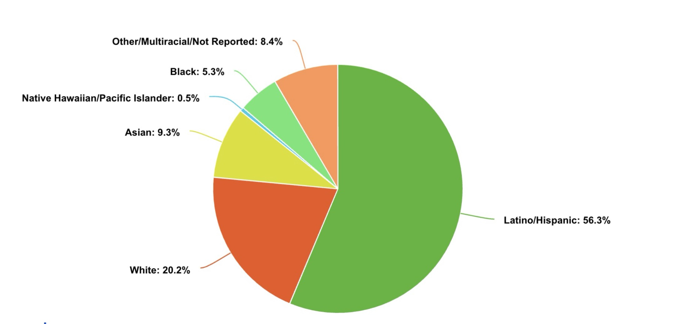
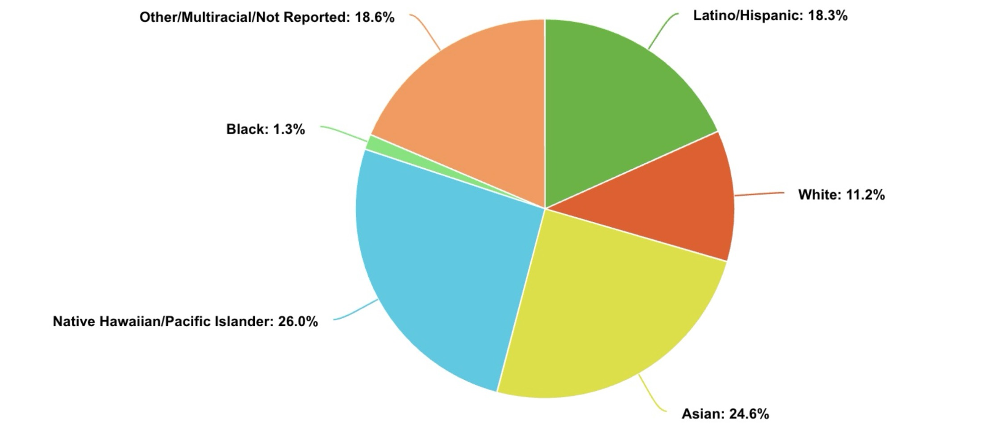
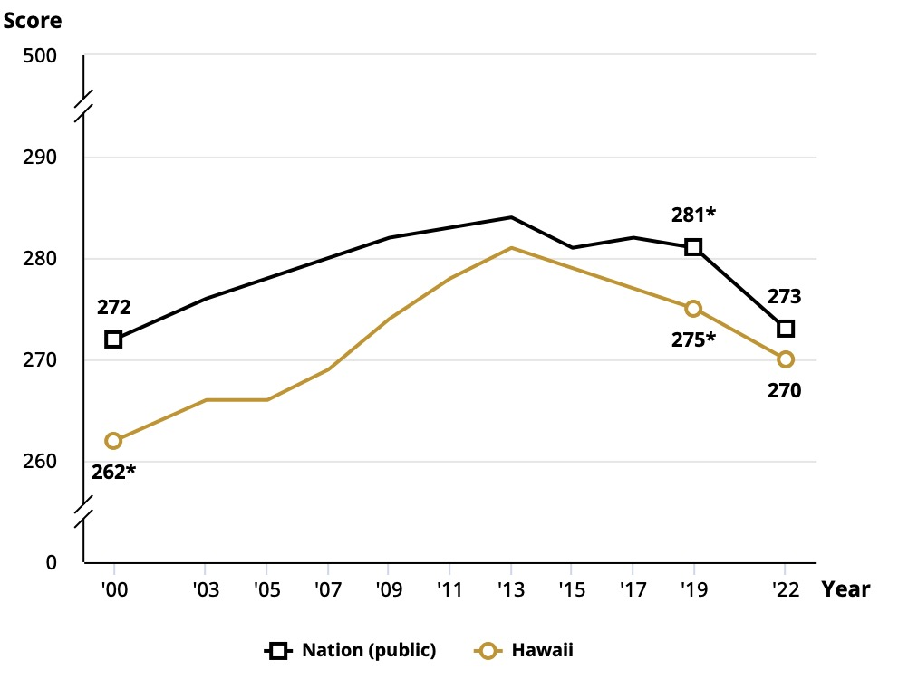
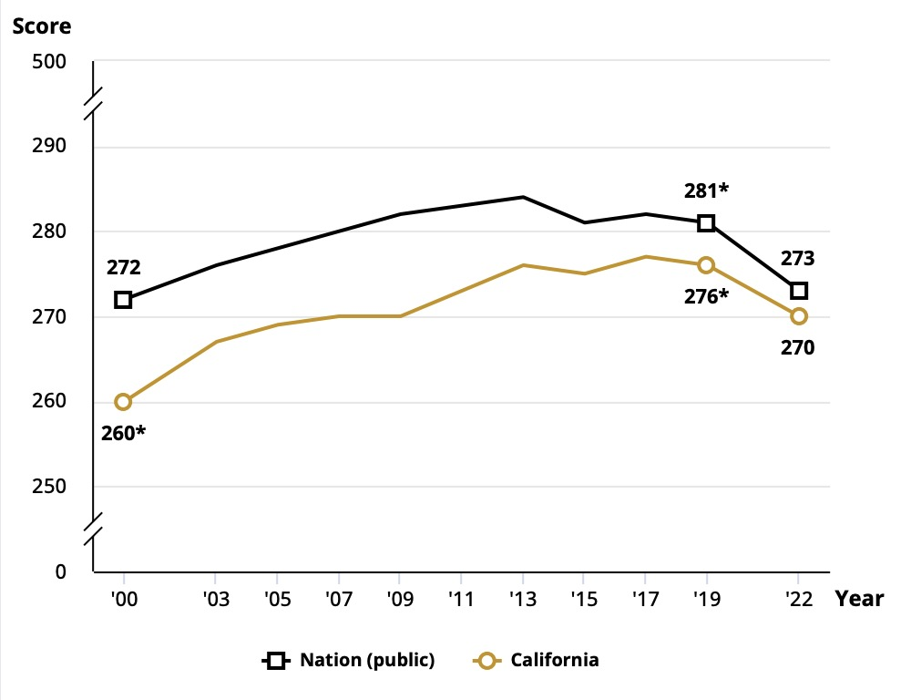
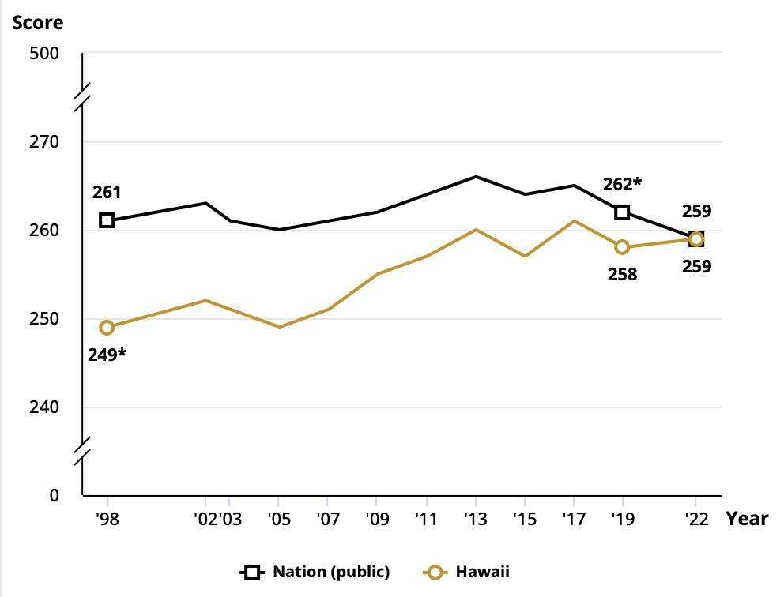
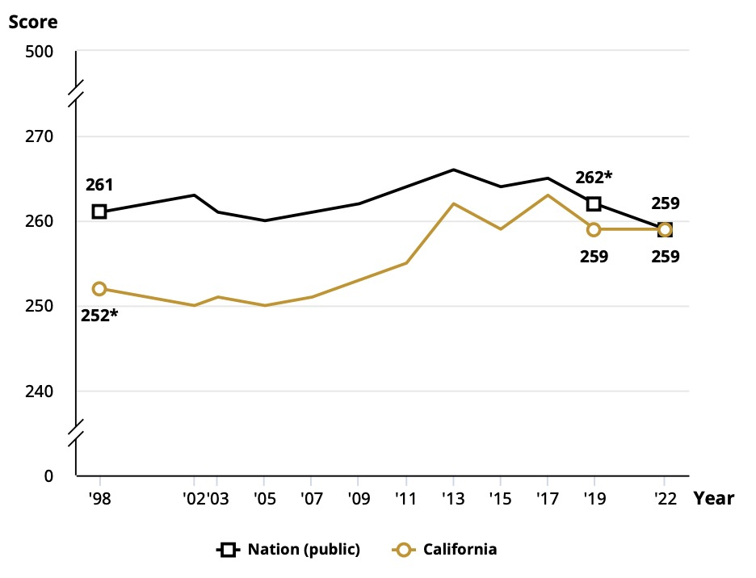
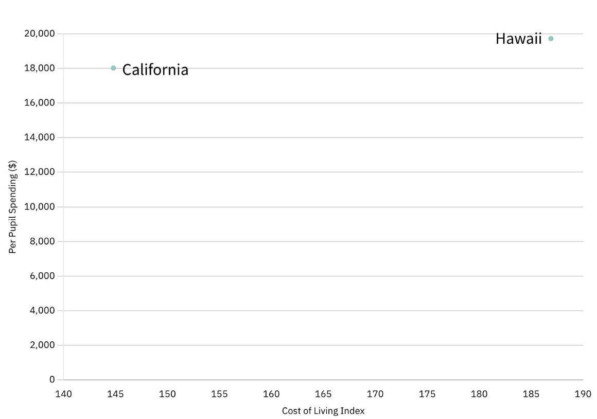
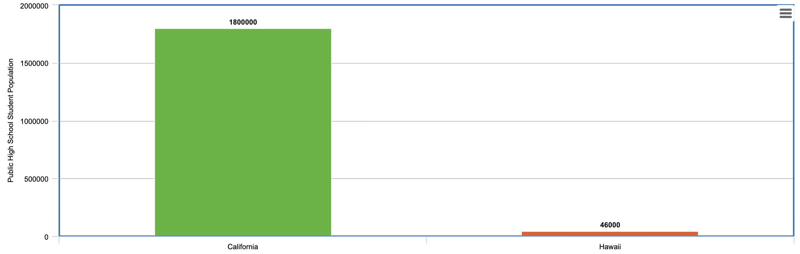
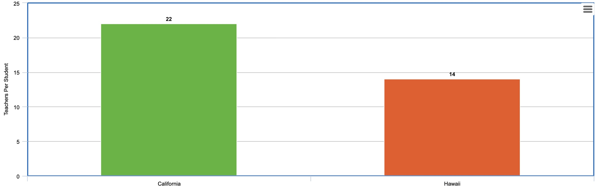

This page provides a comprehensive overview of demographic trends, achievement patterns, school finance statistics, and student to teacher ratios for California and Hawaii's education systems. There is also some analysis of the data for each section, putting the data into context.
Hawaii and California’s school systems have a vastly different ethnic makeup. Specifically, California has a large Latino/Hispanic population, whereas Hawaii’s school system is more diverse with a larger Native Hawaiian/Pacific Islander and Asian population. The demographic data of these two school systems is listed in the table below:
| Ethnic Group | California (%) | Hawaii (%) |
|---|---|---|
| Latino/Hispanic | 56.3% | 18.3% |
| White | 20.2% | 11.2% |
| Asian | 9.3% | 24.6% |
| Native Hawaiian/Pacific Islander | 0.5% | 26.0% |
| Black | 5.3% | 1.3% |
| Other/Multiracial/Not Reported | 8.4% | 18.6% |
Just as California has its smallest minority groups at 0.5% and 5.3% (Native Hawaiian/Pacific Islander and Black respectively), Hawaii has its smallest minority group (Black) sitting at just 1.3%. Although both of these school systems have relatively diverse ethnic makeups, the minorities in each community are vastly outnumbered, as shown by the silvers in the pie charts below:


Hawaii and California have very similar statistics when it comes to standardized test performace. While recent data for grade 12 students isn't available, we can see just how similar the National Assessment of Educational Progress (NAEP) scores are between the two states:
| Subject | Hawaii | California | National Average | State Difference (|Hawaii - California|) |
|---|---|---|---|---|
| Math | 270 | 270 | 273 | 0 |
| Reading | 259 | 259 | 259 | 0 |
As we can see from the table above, the average NAEP scores for both Hawaii and California aren't too dissimilar (in this case, very similar). Additionally, both states are near the national average for both subjects. The following graphs are a visual representation of the data pulled from the NCES website, the official source for the NAEP scores.




The way schools are funded in Hawaii and California is very different. Hawaii's school system is funded by the state government, while California's school system is funded by the local property taxes and state funding. Due to Hawaii's centralized school system, the state government recieves money directly from state legislature and the Department of Education is able to allocate these funds as it sees fit (Method).
The way these two states source their money is not the only difference. Hawaii also tends to spend more money per pupil than California. In 2025, Hawaii will spend $19,719 per pupil, whereas California will only spend $18,020 per pupil (a $1,699 difference) (World Populatin Review). Both states spend a little over the national average per pupil ($17,277). However, these numbers don't tell the full story.
Hawaii's cost of living is higher than California's, so this extra money per pupil may be needed to maintain the same level of resources in Hawaii (World Populatin Review). On the other hand, California's significantly higher student population may actually necessitate extra funding per pupil to support student needs.

The average high school class size in Hawaii and California is very different. Hawaii has a public high school student population of about 46,000 students. This number is absolutely tiny compared to California's public high school student population of 1,800,000 students.
Now, one would assume that with more students come more teachers. While this is true, the teachers in California aren't enough to keep up with demand. In 2022, the average student to teacher ratio in California was roughly 22:1, wheras the student to teahcer ration in Hawaii was just 14:1.
Due to the decentralized nature of California's school system, a lot of the time, teachers aren't where they are needed most, leaving some classrooms with an extremely high student to teacher ratio. In contrast, Hawaii's centralized school system mostly allows the Department of Education to allocate teachers as needed, ensuring that each classroom has the resources it needs.
Although this fact is at play, even if teachers in California were to be properly distributed, the student to teacher ratio would still be too high. The fact of the matter is that the demand for teachers in California is much higher than the supply, leaving schools with a large student to teacher ratios and less engaging classrooms.


When viewed together, the demographic trends, achievement patterns, funding structures, and educator data reveal a more complex story about how scale, structure, and resources interact in the education systems of California and Hawaii.
Despite having a much smaller student population, Hawaii allocates its resources through a more centralized, state-led system that allows for more equitable distribution of teachers and a lower student-to-teacher ratio. This better student to teacher ratio possibly allows for more engaging classes, explaining students’ high performance on standardized tests despite comparatively low per pupil spending to cost of living index.
California, on the other hand, educates over 1.8 million high school students—nearly 40 times more than Hawaii—under a highly decentralized model. Its student-teacher ratio of 22:1 gives room for less engaging classrooms. However, its higher per pupil spending to cost of living index potentially allows for more resources and extracurricular programs that make up for these less intimate classroom settings. Through clubs and other extracurricular activities, students have the potential to make up for their lack of a more personalized education.
These reasons could explain the similar achievement between Hawaii and California students. Both states lack something, yet it is made up for with other factors that balance their respective systems and allow students to perform at a high level.